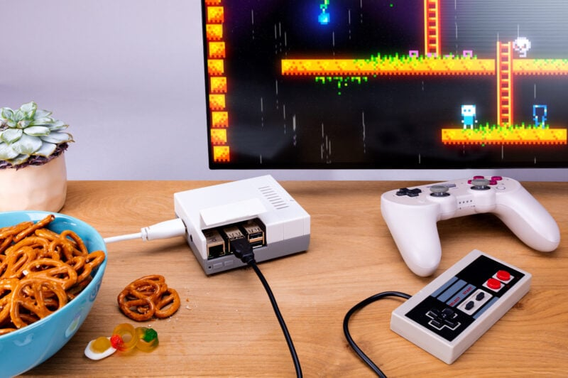

Sujet suivi : le Raspberry Pi
Veille technologique
Raspberry Pi
Qu'est-ce que la veille technologique ?
La veille technologique consiste à surveiller les évolutions technologiques pour identifier les nouvelles tendances et innovations dans un domaine.
Outils et sources de ma veille
- Feedly (agrégateur de flux RSS)
- Raspberry Pi News (actualités officielles)
- Framboise314 (blog projets Raspberry Pi)
- Raspberry Pi Magazine (magazine de projets)
- Raspberry Tips (guides pratiques Raspberry Pi)
- Wikipédia (fiche technique et historique)
- Instructables (tutoriels de projets DIY)
Qu'est-ce qu'un Raspberry Pi ?
Le Raspberry Pi est un nano-ordinateur monocarte, de la taille d'une carte de crédit, conçu par la Fondation Raspberry Pi pour rendre l'informatique plus accessible à tous. Son coût abordable et sa compatibilité avec des systèmes d'exploitation libres comme GNU/Linux, ainsi que Windows et Android, en font une solution idéale pour l'apprentissage et la création de projets.
Au-delà de sa fonction éducative, il incarne une démarche de démocratisation de la technologie, permettant à chacun, débutant ou confirmé, de développer des compétences en informatique et de résoudre des problèmes techniques. Grâce à sa flexibilité, il peut remplacer un ordinateur classique, offrant une alternative économique pour ceux qui n'ont pas accès à des machines coûteuses.

Le tout premier modèle du Raspberry Pi : version 1 B
Histoire du Raspberry Pi
L'histoire du Raspberry Pi débute en 2006, avec la création des premiers prototypes inspirés par le BBC Micro. Après six années de développement, le premier Raspberry Pi voit le jour en 2012. Son objectif principal était de permettre aux jeunes de découvrir l'informatique et de s'y initier à un prix abordable, autour de 35 dollars. Ce projet a permis de démocratiser l'accès à l'informatique, à la fois pour l'éducation et pour l'expérimentation personnelle.
Eben Upton
Pour mieux comprendre l'origine du Raspberry Pi, il est essentiel de se pencher sur son créateur, Eben Upton. Eben Upton est un ingénieur britannique, créateur du Raspberry Pi et fondateur de la Fondation Raspberry Pi. Diplômé en physique et en ingénierie de l'Université de Cambridge, il a ensuite travaillé pour des entreprises prestigieuses telles que Broadcom et IBM.

Eben Upton
Les premiers prototypes
De 2006 à 2011, Eben Upton a créé des prototypes d'ordinateurs monocartes tout en travaillant chez Broadcom. Inspiré par le BBC Micro, qu'il utilisait à l'école, il a voulu concevoir un ordinateur plus compact et moins cher.

Le BBC Micro modèle B, créé par Acorn Computers et sorti en 1981
Le BBC Micro, vendu autour de 399£ en Angleterre, avait du mal à être acquis par les écoles en raison de son prix élevé. En réponse, Upton a créé une version plus abordable et compacte de cet ordinateur. Au début, ses prototypes étaient réalisés sur de grandes plaques de prototypage, permettant de tester et déboguer facilement.

Le prototype d'Eben Upton basé sur un processeur Atmel
L'idée et son origine
En 2006, Eben Upton, lors de ses travaux sur des prototypes, a constaté que le coût élevé des ordinateurs freinait l'intérêt des jeunes pour l'informatique, contribuant ainsi à une pénurie de professionnels dans le domaine. Cette observation l'a poussé à vouloir créer un ordinateur dix fois moins cher que le BBC Micro, un modèle très populaire dans les années 80. L'objectif était d'offrir un outil accessible à tous pour encourager l'apprentissage de l'informatique.
Le nom "Raspberry Pi" a été choisi en référence à une tradition dans l'industrie informatique où plusieurs fabricants ont opté pour des noms de fruits, comme Apple ou Acorn. Le "Pi" fait quant à lui référence au langage de programmation Python, utilisé pour le premier design du Raspberry Pi.
La Fondation Raspberry Pi
En 2008, Eben Upton cofonde la Fondation Raspberry Pi avec cinq autres membres (dont David Braben et Rob Mullins), une organisation dédiée à l'éducation technologique. L'objectif principal de la Fondation est de structurer le développement du Raspberry Pi et de le rendre accessible aux étudiants. Cette initiative visait à vendre des ordinateurs à environ 35$ pour aider les écoles à enseigner l'informatique et susciter l'intérêt des jeunes pour les métiers technologiques.
Dans cette optique, la Fondation a adopté Scratch, un langage de programmation visuel créé par le MIT, destiné aux enfants, permettant ainsi une initiation ludique à la programmation.
Les projets de la Fondation ont eu un impact mondial, avec la création de centres informatiques en Afghanistan et en Afrique du Sud, ainsi que des dons de Raspberry Pi aux écoles britanniques. Parmi les donations notables, on retrouve celle de Google, qui a offert 15 000 appareils en 2013.
La crise de pénurie (2021-2023)
Entre 2021 et 2023, le Raspberry Pi a traversé une crise sans précédent. La pénurie mondiale de semi-conducteurs, provoquée par la pandémie de Covid-19, a rendu les cartes quasi introuvables. La production était limitée à environ 400 000 unités par mois, bien en dessous de la demande.
Sur le marché secondaire, les prix ont explosé : un Raspberry Pi 4 à 35€ se revendait jusqu'à plus de 100€, soit des marges de 300 à 400%. En octobre 2021, Raspberry Pi a annoncé sa toute première augmentation de prix depuis sa création, passant le Pi 4 2 Go de 35$ à 45$.
Face à cette situation, Eben Upton a décidé de prioriser les clients professionnels et industriels dont les activités dépendaient du Raspberry Pi. Ce n'est qu'en décembre 2022 que 100 000 unités ont été spécialement allouées aux particuliers, limitées à un achat par personne.
La situation s'est progressivement améliorée en 2023 : en juillet, Eben Upton a annoncé un retour à 1 million d'unités par mois. Le lancement du Raspberry Pi 5 en octobre 2023 a marqué la fin officielle de la crise.

Raspberry Pi 5, symbole du retour à la normale
L'entrée en bourse (juin 2024)
Le 11 juin 2024, Raspberry Pi Holdings a fait son entrée à la Bourse de Londres (LSE) sous le symbole RPI. L'action, proposée à 280 pence (£2,80), a bondi d'environ 35% dès le premier jour de cotation, dépassant les 370 pence.
L'entreprise a été valorisée à environ 542 millions de livres sterling (~690 millions de dollars) et a levé 166 millions de livres au total. Une partie des fonds (environ 40 millions de dollars) est destinée à financer la R&D et renforcer la chaîne d'approvisionnement. Le reste provient de la vente d'actions par la Fondation Raspberry Pi, qui reste actionnaire majoritaire et continue de financer sa mission éducative grâce à ces revenus.
Cette introduction en bourse marque la transition du Raspberry Pi : d'un projet éducatif né à Cambridge, il est devenu une entreprise commerciale à part entière, tout en conservant sa vocation première d'accessibilité.
Applications possibles
- Serveur web
- Borne d'arcade rétro gaming
- Station météo
- Miroir magique
- Bras robotisé
- Voiture ou drone télécommandé
- Centrale domotique
- Serveur NAS
- Satellite (CubeSat)
- Media center (Kodi)
- Bloqueur de publicités (Pi-hole)
- Caméra de surveillance
- Serveur VPN
- Console portable rétro gaming
- Cluster de calcul

Borne d'arcade rétro gaming propulsée par un Raspberry Pi
Utilisations professionnelles
Aujourd'hui, environ la moitié de la production de Raspberry Pi est destinée au marché professionnel et industriel. Voici quelques exemples concrets :
- Affichage dynamique — Des logiciels comme PiSignage permettent de piloter des écrans dans les restaurants, magasins et espaces publics à moindre coût.
- Industrie — L'usine Sony de Pencoed (Pays de Galles) a déployé des Raspberry Pi équipés de capteurs pour surveiller ses machines et gagner en efficacité de production.
- Postes de travail légers — Des entreprises utilisent le Raspberry Pi comme client léger avec Citrix, remplaçant des terminaux coûteux dans les hôpitaux, écoles et bureaux.
- Espace — En 2022, le satellite GASPACS de l'université d'État de l'Utah (USU) est devenu le premier satellite au monde piloté par un Raspberry Pi Zero, fonctionnant 117 jours en orbite depuis l'ISS.
Avantages et inconvénients
| Avantages | Inconvénients |
|---|---|
| Prix très abordable | Puissance limitée pour les tâches lourdes |
| Faible consommation d'énergie | Stockage sur carte microSD parfois peu fiable |
| Format compact et facile à intégrer | Non idéal pour un usage professionnel intensif |
| Large communauté et beaucoup de ressources | Vendu sans boîtier de protection |
| Polyvalent : serveur, media center, robotique, etc. | Risque de surchauffe sans refroidissement |
| Bon outil pour l'apprentissage de l'informatique | — |

Boîtier officiel du Raspberry Pi
Concurrents et alternatives
Le Raspberry Pi n'est pas le seul nano-ordinateur sur le marché. Plusieurs alternatives existent, chacune avec ses points forts :
| Carte | Point fort | Prix |
|---|---|---|
| Orange Pi | Performances supérieures par rapport au prix, stockage NVMe natif | 30 - 150€ |
| Banana Pi | Spécialisé réseau (routeurs, NAS, pare-feu), certains modèles avec ports 10G | 30 - 100€ |
| NVIDIA Jetson | Intelligence artificielle et vision par ordinateur (jusqu'à 67 TOPS, ex. Orin Nano) | ~250€ |
| Arduino | Microcontrôleur temps réel, idéal pour les capteurs et l'embarqué | 5 - 40€ |
| ODROID | Série H en x86, jusqu'à 64 Go de RAM, idéal pour NAS | 50 - 150€ |
Malgré cette concurrence, le Raspberry Pi conserve un avantage majeur : sa communauté. Avec des millions d'utilisateurs, des milliers de tutoriels et un système d'exploitation officiel (Raspberry Pi OS) optimisé, il reste le choix le plus accessible pour débuter.
Innovations récentes (2024-2025)
- Compute Module 5 - CM5 Novembre 2024 Version compacte et puissante du Raspberry Pi 5 pour l'industrie et les systèmes embarqués.
- Raspberry Pi AI Kit Juin 2024 Permet d'exécuter de l'intelligence artificielle localement grâce au module Hailo-8L.
- Caméra IA - Sony IMX500 Septembre 2024 Analyse d'image en temps réel directement sur le capteur, sans calcul externe.
- PiEEG-16 - Interface cerveau-machine Septembre 2024 Module pour capter des signaux bioélectriques en temps réel.
- Raspberry Pi Pico 2 W Novembre 2024 Microcontrôleur à bas prix avec Wi-Fi 4 et Bluetooth 5.2 pour les projets IoT.
- Raspberry Pi 500 Décembre 2024 PC tout-en-un dans un clavier avec 8 Go de RAM et double sortie 4K.
Évolution des modèles

- Génération 1
- Raspberry Pi B Avril - Juin 2012
- Raspberry Pi A Février 2013
- Raspberry Pi 1 B+ Juillet 2014
- Raspberry Pi 1 A+ Novembre 2014
- Compute Modules (pour systèmes embarqués)
- Compute Module 1 Avril 2014
- Compute Module 3 Janvier 2017
- Compute Module 3+ Janvier 2019
- Compute Module 4 Octobre 2020
- Compute Module 5 Novembre 2024
- Génération 2
- Raspberry Pi 2 B Février 2015
- Format Zero
- Pi Zero Novembre 2015
- Pi Zero W Février 2017
- Pi Zero WH Janvier 2018
- Pi Zero 2 W Octobre 2021
- Génération 3
- Raspberry Pi 3 B Février 2016
- Raspberry Pi 3 B+ Mars 2018
- Raspberry Pi 3 A+ Novembre 2018
- Génération 4
- Raspberry Pi 4 B Juin 2019
- Raspberry Pi 400 (Clavier) Novembre 2020
- Microcontrôleur Raspberry Pi Pico
- Raspberry Pi Pico Janvier 2021
- Raspberry Pi Pico W Juin 2022
- Raspberry Pi Pico H / WH 2022
- Raspberry Pi Pico 2 W Novembre 2024
- Génération 5
- Raspberry Pi 5 Octobre 2023
- Raspberry Pi 500 (Clavier) Décembre 2024

Raspberry Pi 500
Raspberry Pi OS
Le Raspberry Pi fonctionne principalement avec Raspberry Pi OS, un système d'exploitation basé sur Debian GNU/Linux, spécialement optimisé pour le matériel Raspberry Pi. Anciennement appelé Raspbian, il a été renommé en 2020 pour refléter son statut de système officiel.
Raspberry Pi OS est disponible en trois versions : Lite (sans interface graphique, idéal pour les serveurs), Desktop (avec un bureau léger) et Full (avec des logiciels pré-installés comme LibreOffice et le navigateur Chromium). Il intègre également des outils pédagogiques comme Thonny (éditeur Python) et Scratch.
Bien que Raspberry Pi OS soit le plus populaire, le Raspberry Pi est compatible avec de nombreux autres systèmes : Ubuntu, LibreELEC (media center), RetroPie (rétro gaming), ou encore Home Assistant (domotique).
La communauté
L'un des plus grands atouts du Raspberry Pi est sa communauté. Avec plus de 60 millions d'unités vendues, le Raspberry Pi dispose d'une base d'utilisateurs massive qui partage projets, tutoriels et solutions en ligne.
Les ressources communautaires sont nombreuses :
- Forums officiels Raspberry Pi — entraide et partage de projets
- GitHub Raspberry Pi — code source, documentation et contributions
- Reddit r/raspberry_pi — discussions et projets de la communauté
- The MagPi Magazine — magazine officiel gratuit en PDF
- Raspberry Pi Projects — tutoriels guidés pour tous niveaux
Cette communauté active est ce qui distingue le Raspberry Pi de ses concurrents : quel que soit le projet envisagé, il existe presque toujours un tutoriel ou un retour d'expérience disponible en ligne.
Conclusion
Depuis son lancement en 2012, le Raspberry Pi a parcouru un chemin impressionnant : d'un simple ordinateur éducatif à 30€, il est devenu un outil incontournable dans l'éducation, l'industrie et le monde du DIY. Avec plus de 60 millions d'unités vendues, il a prouvé qu'un ordinateur accessible pouvait avoir un impact mondial.
Les innovations récentes, comme le kit IA ou le Pi 500, montrent que le projet ne cesse de se réinventer pour répondre aux besoins actuels. Le Raspberry Pi reste un symbole de ce que la technologie peut accomplir lorsqu'elle est pensée pour être accessible à tous.

Du Pi 1 au Pi 500 : plus d'une décennie d'évolution